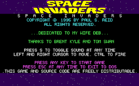

ATARİ OYUNLARI
PONG (1972)
Pong, Atari'nin ilk büyük başarısı ve video oyun endüstrisinin temel taşlarından biridir. 1972'de Nolan Bushnell ve Ted Dabney tarafından Atari şirketi kurulduktan sonra, Pong, Bushnell'in tasarladığı basit bir masa tenisi oyunudur. Oyun, birer paddles (raket) ile topu karşılıklı olarak gönderip almaya dayanıyordu. Bu basit ama bağımlılık yapan oyun, video oyunlarının popülerleşmesini sağladı ve arcade oyun makinelerinin yaygınlaşmasına öncülük etti.
 OYUNU OYNAMAK İÇİN TIKLAYINIZ
OYUNU OYNAMAK İÇİN TIKLAYINIZ
SPACE INVADERS (1978)
Space Invaders, 1978'de Taito tarafından geliştirildi ancak Atari, bu oyunun Amerika'daki dağıtımını üstlendi. Bu oyun, genellikle arcade oyunlarının zirveye ulaşmasında önemli bir yer tutar. Oyuncu, uzay gemisiyle uzaylıları vurur. Space Invaders, video oyun endüstrisinin büyümesinde kritik bir rol oynamıştır, çünkü oyun ilk kez yüksek skorlar ve liderlik tabloları gibi özellikleri tanıtarak oyunları daha rekabetçi hale getirdi.
 OYUNU OYNAMAK İÇİN TIKLAYINIZASTEROIDS (1979)
Asteroids, 1979'da Atari tarafından piyasaya sürülen ve o dönemin en popüler arcade oyunlarından biri olan bir uzay temalı nişancı oyunudur. Oyuncu, bir uzay gemisiyle asteroidleri yok etmeye çalışır. Oyun, vektör grafiklerini kullanarak etkileyici bir görsel deneyim sundu. Asteroids, oyun dünyasında önemli bir yer tutar ve birçok kişi tarafından Atari'nin en iyi oyunlarından biri olarak kabul edilir. Bu oyunlar, Atari'nin video oyun endüstrisinde ne kadar etkili olduğunu ve arcade oyunlarının nasıl evrildiğini gösteren en önemli örneklerdendir.
.png) OYUNU OYNAMAK İÇİN TIKLAYINIZ
OYUNU OYNAMAK İÇİN TIKLAYINIZ